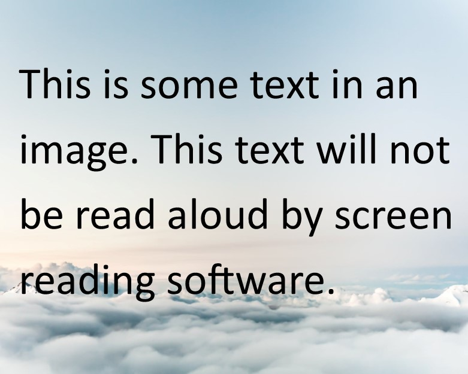

Images & Video
Images and video can be challenging for users with visual or hearing impairments. There are a number of accessibility features that can help.
Images & Alt Text
Images should have descriptions for users unable to see. Web designers can insert descriptions of images called alt text, which are read out loud by screening reading software. All well designed websites should have alt text for every image that contributes significantly to the page. If an image does not have alt text, screen reading software may either ignore the image, or identify that the element is an image by stating out loud the word 'Image'. The behaviour of the screen reading software when the image does not have alt text depends on the make of sofware and the settings. Sometimes, if an image is purely decorative and does not contribute to the information on the page, a web designer may try and hide the images from screen reading software. Despite attempts of web designers to hide decorative images, these hidden images may or may not be spotted by screen reading software depending on the techniques the designers have used and the screen reading software of the user.
Below are three identical pictures of some apples. The first image has an alt text description, the second image has no alt text description, and the third image has been ‘hidden’ from screen reading software (but may still be identified as an image depending on the screen reading software used).
First image, image with alt text. The alt text that screen reader users hear is "showing a red apple on a tree in the foreground and several more apples in the background".
Second image, image without alt text. Screen reader users may not be aware that there is an image, or simply hear the word 'image'.
Third image, decorative image, deliberately 'hidden' from screen reading software. Screen reader users may not be aware that there is an image, or simply hear the word 'image'.
Image Only Text
Some images contain text within the image. The image is an image of text. The text embedded in the image cannot be read out loud by screen reading software. Ideally the image will have alt text, which will describe the text written on the image. Below is an image, inside of which there is some text.
Video Players
There are many kinds of video players that are available which can be used in websites. Different video players will work slightly differently. This page uses one of the most common video players, the YouTube video player. The video itself is hosted on the YouTube website, but plays inside the current page.
Example Video
The YouTube video player can be accessed using the keyboard. The TAB key can be used to cycle forward through the controls and the SPACEBAR to activate. Therefore to play the video, press the TAB key until the play button is reached and press on SPACEBAR. Pressing on the RIGHT ARROW key on the keyboard will skip forward in the recording and pressing on the LEFT ARROW skips backwards.
The YouTube video player has the following controls and links.
- Channel Link: Link to the YouTube channel where the video came from.
- Video Link: Link to the item on the YouTube website.
- Watch Later Button: Save the video to watch later on YouTube.
- Share Menu Item: Shows the web address (URL) of the video, so it can be copy and pasted and sent on to others. Activating this control opens a sub menu with a number of options for sharing the video.
- More Videos List: List of links to more videos similar to the current video.
- Play Button: Plays and pauses the video.
- Seek Slider: Indicates how far into the video the user is (navigate using the LEFT and RIGHT ARROW keys).
- Mute Button: Turns the sound on and off.
- Volume Slider: Increases the volume, use the LEFT and RIGHT ARROW keys to adjust.
- Subtitles/Captions Button: Puts in captions into the video.
- Settings Menu Item: Change the player settings. Activating this control opens a sub menu with a number of settings controls.
- Full Screen Button: Button to watch the video in full screen.
Not all of these controls are visible all the time. The time slider only appears when the video has started playing. The list of more videos only appears when the video is paused or finished.
Audio Description
Audio description is a narration of the action in the video for visually impaired users. Most videos will not have audio description. Underneath is an example of a video with audio description.